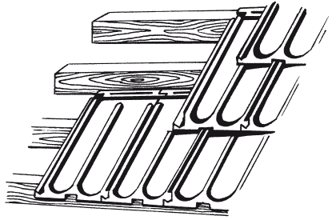
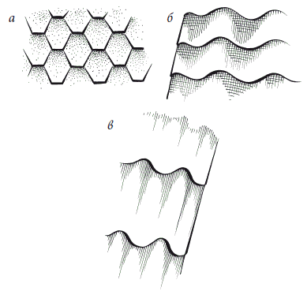
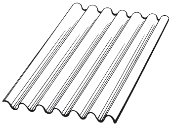
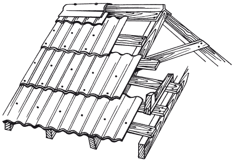

Кровля.

Кровля жилого дома, а также других сооружений, расположенных на территории коттеджного или приусадебного участка, представляет собой важный венчающий элемент, придающий всему ансамблю характерный вид и определенный архитектурный облик.
При строительстве к кровле предъявляют ряд требований. Она должна быть легкой, долговечной, экономичной в изготовлении и эксплуатации, отвечать условиям пожарной безопасности.
Долговечность и надежность крыши, величина уклона ската во многом зависят от правильного выбора кровельного материала.
Классификация кровельСуществуют разные классификации кровельных материалов. Материалы делят на твердые и мягкие покрытия. Некоторые кровли изготавливают из природных, другие – из искусственных материалов различного происхождения. По виду используемого сырья различают органические (битумные, дегтевые, древесные и полимерные), силикатные (асбестоцемент, черепица) и металлические кровли (кровельная листовая сталь: черная или оцинкованная). В суперсовременных коттеджах кровля может быть выполнена из медных или дюралевых листов небольшой толщины, которые укладывают на плоские асбоцементные листы. Такая крыша будет эксплуатироваться не менее 100 лет, однако не каждому она по карману, поскольку стоит весьма дорого. Также кровельные материалы делят на мастичные, рулонные и штучные (листы, плитки). Керамическая и бетонная черепицы тяжелые, тогда как вес рулонной кровли, гибкой черепицы, шифера значительно меньше.
В наши дни существует огромный выбор покрытий для кровельных работ. Одни из них производят давно, но используют и поныне, другие созданы на основе современных новейших технологий. Строительные материалы, предназначенные для устройства кровель, должны обладать высокими техническими и экономическими требованиями. К технико-эксплуатационным свойствам относятся водонепроницаемость, морозостойкость, плотность, прочность, негорючесть и легкость материала. Среди экономических требований особое внимание следует обратить на малую трудоемкость укладки, невысокую стоимость материала и устройства основания под него.
В последние годы на отечественном рынке появилось много новых суперсовременных кровельных материалов. Они придают кровле красивый респектабельный вид, сохраняющийся десятилетиями, а их качество соответствует мировым стандартам. Однако и традиционные материалы для покрытия крыш используют достаточно широко, несмотря на то, что главным недостатком является их относительная недолговечность.
Мембранная кровляТрадиционно различают 3 вида мягких кровель: битумно-полимерные или рулонные кровли, мастичные кровли и мембранные кровли. Критерием для разделения служит состав гидроизоляционных покрытий. Иногда мембранными называют битумно-полимерные материалы, что не совсем правильно для сложившейся в русском языке практики. Дело в том, что в англоязычных странах словом «мембрана» называют любые типы рулонных кровельных материалов, куда входят и битумно-полимерные.
Для отечественного строителя мембрана является новым материалом, в связи с чем встречается достаточно редко. С мастичными кровлями дело обстоит также и лишь битумные рулонные покрытия безраздельно властвуют на российских крышах. Впрочем, постепенно ситуация меняется, поскольку люди не могут не оценить преимуществ новых технологий, которые со временем дешевеют. Насколько распространены в России битумные рулонные материалы, настолько же в Европе популярны мембраны.
Мембрана состоит из соединенных между собой олефин, представляющих смесь 70 % пропиленово-этиленового каучука и 30 % полипропилена, стабилизаторов, антиоксидантов, а также армирующего слоя.
Как правило, мембранами оснащают крыши с небольшими уклонами, то есть плоские кровли. Плоская конструкция чаще всего легче других конструкций и дешевле с точки зрения строительства и последующей эксплуатации. Кроме того, на плоской крыше появляется свободное пространство, где можно отдыхать, заниматься спортом и т. п. Можно сделать на плоской крыше настоящую лужайку. В этом случае лучше мембран на основе каучука или термопластичных олефинов найти вряд ли что-то удастся. Срок службы этого материала достигает 60 лет. Толщина мембран варьируется в пределах 0,8–1,5–2 мм, масса 1 м в среднем – 1,3 кг. Профессиональные монтажники свидетельствуют, что скорость покрытия крыши мембраной в 1,5 раза выше, чем при использовании битумно-полимерной кровли.
Покупатель имеет возможность выбрать из множества предлагаемых размеров полотен мембраны для крыш любых конструкций, что поможет свести к минимуму число стыковочных швов. Как правило, вместе с мембранами продают клеи, герметики, крепежные элементы и прочие аксессуары для крыш.
Листы кровельной мембраны высокоэластичны, устойчивы к механическим повреждениям, поскольку армированы полиэфирной сеткой, равнодушны к ультрафиолету и агрессивным средам, не боятся сильных холодов (до –60 °C) и огня.
Так как мембраны сами по себе отлично защищают от проникновения воды, дополнительной гидроизоляции при их монтаже чаще всего не требуется.
Минусом мембран можно считать их высокую стоимость, но переплата вполне оправданна, ведь никакой битумно-полимерный материал по качеству не сравнится с мембраной. Со временем битум выделяет пластифицирующие вещества и становится хрупким, трескается и уже не защищает от воды. Трещины образуются еще и потому, что битумно-полимерные материалы плохо противостоят низким температурам. На ремонт таких крыш уйдет намного больше средств, чем на покупку мембраны.
При укладывании мембраны обычно не нужно убирать старую гидроизоляцию, конечно, если не требуется сушка. Никаких ограничений на основание под мембраны нет. Связать мембранные листы можно разными способами. Самый широко используемый – это сварка горячим воздухом, которая обеспечивает максимальную прочность шва. Применяется особая сварочная машина, в которой температура, давление и скорость прохождения вдоль шва автоматически удерживаются на требуемом уровне.
На проблемных участках – углах, отверстиях и т. д. – переключаются на ручную сварку.
Другой способ соединения листов попроще. Можно приклеить их с помощью специальных двусторонних клейких лент. Такой способ подходит для мембран на основе синтетического каучука. Естественно, вероятность повреждения швов, соединенных клеящейся лентой, намного больше, чем у сваренных. Швы станут слабым звеном во всей мембранной крыше. Компромиссным решением может быть сочетание обоих способов.
Самым экономичным способом укрепления будет так называемый балластный, при котором мембрана свободно покоится на основании, закрепленная по периметру в точках соприкосновения с вертикальными поверхностями. Поскольку листы могут улететь при сильном ветре, их придавливают грузом массой от 50 кг на 1 м . Грузом может служить, например, крупная галька или щебень, камни, бетонные блоки и т. д. Естественно, конструкция крыши должна быть крепкой, чтобы выдержать вес.
Закреплять материал механически лучше всего только тогда, когда несущие конструкции не выдержат дополнительной нагрузки или при отсутствии на крыше парапетов и сливов. Фиксацию мембраны можно произвести с помощью специальных саморезов или же полностью приклеить к основанию. Последний вариант предпочтительнее для крыш с нестандартными очертаниями или находящихся в условиях действия серьезных механических нагрузок. В качестве клея применяют специальный монтажный клей.
Мастичная кровляВ качестве основного компонента таких кровель используется мастика, то есть жидкая тягучая гомогенная субстанция. В нее иногда добавляют различные растворители, наполнители. После нанесения на поверхность мастика затвердевает и превращается в однородное покрытие. Различают битумные, битумно-полимерные и полимерные мастики.
Применение данного вида кровли не ограничено каким-либо уклоном крыши. Когда мастика твердеет, то становится похожей на эластичный, не пропускающий воду бесшовный ковер толщиной примерно 6 мм. Расход вещества при создании или ремонте получается незначительный.
Подсчитано, что хотя расходы, связанные с устройством мастичной кровли, больше, чем в случае с битумными, длительный срок службы и надежность с лихвой компенсируют разницу.
Если грамотно распорядиться мастичным материалом, то о крыше на долгое время можно забыть. В числе достоинств мастики называют высокие характеристики гидро– и звукоизоляции, устойчивость к неблагоприятным атмосферным воздействиям, агрессивным средам.
К монтажу кровли приступают с пониженных мест. Основной ковер дополняют двумя слоями с армирующими прокладками, в качестве которых используют стекловолокно или стеклосетки. Дополнительное усиление требуется районам соприкосновения кровли и стен, а также других вертикальных элементов. При этом мастичный слой должен находиться на уровне верхней кромки переходных бортиков, которые размещаются при переходе кровли на вертикальные поверхности. Когда основной ковер уложен, подобные зоны укрепляют нанесением двух мастичных слоев, армированных стекловойлоком или стеклотканью. Толщина армированных слоев не должна превышать 8 мм.
Мастику намазывают на бетонные плиты или цементно-песчаные стяжки. Сначала на основания наносят грунтовку (битум в керосине – пропорции по массе 1: 2). Затем с поверхности удаляют пыль и покрывают ее мастикой.
По сути, устройство мастичной кровли похоже на укладку дорожного асфальта. И там и там используется армирование, чтобы продлить срок службы покрытия. Если мастики битумные и битумно-резиновые, то применяют стеклохолст, а если битумно-латексные, то стеклосетку. Арматуру размещают на грунтованное основание, покрывают мастикой и засыпают гравий.
Количество арматурных слоев – 2–4. Как правило, число определяется степенью наклона крыши. При уклоне до 2,5 % делают 3 слоя мастики с 3 армирующими прокладками и сверху защищенные слоем вдавленного гравия. При уклоне до 10 % армированных слоя обычно 2. При уклоне до 15 % заливают 3 слоя мастики – в среднем слое 1 армирующая прокладка.
Комбинированными кровлями именуют покрытия, у которых поверх мастики расположены рулонные материалы, предохраняющие ковер от негативных атмосферных факторов. Благодаря подобной технике, для нижних слоев можно приобретать мастики подешевле.
Напоследок готовая мастичная кровля должна быть покрыта светозащитным слоем. Помимо этого осуществляют укрепление слабых мест новой кровли. По краям крыши кладут дополнительный армированный мастичный слой шириной до 6 см.
Со временем на мастичной кровле возможно образование трещин. Их устраняют с помощью полимерцементного раствора. Если трещины образовались в водосборных лотках, в областях сопряжения с водосточной воронкой, то используют эпоксидные клеи.
Мелкие трещинки до 0,2 мм просто замазывают раствором, тогда как более крупные следует немного расширить, зачистить и плотно заделать вровень с плоскостью кровли. Бывает, что на кровельных панелях отслаивается бетонный слой. Если такое произошло, то слой необходимо снять и очистить поверхность от пыли, после чего покрыть бетон слоем поливинилацетатной дисперсии, размешанной в воде в пропорции 1: 1. Когда этот слой высохнет, поверх намазывают слой полимерцементного раствора, не забывая про слой тканевой сетки. Раствор необходимо предохранять от воздействия атмосферных осадков до его застывания. Потом на него наносят гидроизоляционное покрытие.
Для восстановления на кровле отдельных участков с них нужно снять то, что осталось от защитного слоя, отошедшей мастики, и заделать трещины горячей битумной мастикой.
ЭкокровляДерн
Зеленые кровли можно считать одним из наиболее древних кровельных материалов, которым пользовались еще люди, охотившиеся на мамонтов. К сожалению, в настоящее время данный вид покрытий для крыш не слишком популярен, в первую очередь из-за огромного количества высокотехнологичных материалов.
Однако ценители природных материалов никогда не переведутся. Искусственными материалами многие уже сыты по горло. Неудивительно, что все натуральное постоянно дорожает. Способ отделки крыш зеленой кровлей постепенно становится все более востребованным. Ритм жизни в городах сумасшедший и далеко не у всех имеется возможность выбираться на природу. Зеленое покрытие крыши восполняет недостаток природных зон, ведь там можно устроить пикник, просто отдохнуть.
Сразу нужно оговориться, что работы по монтажу экокровли достаточно трудны. Слабым звеном будут места ее примыкания к вертикальным поверхностям. Устройством экокрыши должны заниматься знающие и умеющие люди, поскольку необходимо соблюсти технологию и проектные требования, иначе крыша может протекать, разрушаться, грунт будет высыхать, а растения загнивать.
Прежде всего, требуется составить концепцию озеленения, то есть принять решение о виде высаживаемых растений, как будет осуществляться уход за ними и сколько на это будет тратиться средств. Надо составить проект с указанием потенциальных нагрузок, специфических особенностей и целесообразности применения выбранной технологии. Поэтому желательно, чтобы вместе работали архитектор, ландшафтный дизайнер и специалист по растениям, если только хозяин дома не совмещает все таланты.
Перед тем как переходить непосредственно к крыше, требуется сделать план застройки, природно-климатическую характеристику местности, план основания с указанием несущих конструкций, водостоков, источников водо– и электроснабжения, расчеты нагрузок на несущие конструкции, элементы несущей конструкции, специфику участка, виды используемых растений и откуда планируется их получать, подсчет максимально допустимых расходов.
Как правило, под экокровли используют плоские крыши, что и понятно. Однако можно траву высадить и на наклонной. В этом случае на склоне горизонтально с промежутками приделывают бруски длиной, соответствующей ширине крыши. Задерненная кровля будет дополнительно защищать дом от дождя (вода задерживается в земле и не стекает бурным потоком – почва экокровли толщиной до 10 см впитывает примерно 75 % дождевых осадков), ветра, низких температур (земля сама по себе служит изолятором, а покрытая снегом – тем более, да и растения под снегом хорошо зимуют). Растительность очищает дождевую воду от примесей (это свойство можно использовать в хозяйстве).
Различают интенсивную экокровлю и экстенсивную. В первом случае на крыше устраивают настоящий сад: высаживают газонную траву, цветы, кустарники и деревья, которые могут достигать в высоту 4 м (толщина плодородного слоя свыше 1 м). Несущие конструкции должны выдерживать большие нагрузки – минимум 750 кг на 1 м . Во втором случае довольствуются только травяным ковром вкупе с разнообразными растениями в кадках с землей. Свободно разгуливать по такой крыше уже нельзя, а можно ходить по дорожкам. Ухаживать за такой крышей не нужно, поскольку растения подбираются таким образом, чтобы самостоятельно переносили колебания температуры и недостаток воды. Экстенсивные экокровли весят мало, не требуют существенных затрат, но и разнообразие растений невелико.
Экокровля в общем виде состоит из нескольких слоев: корнезащитная пленка, растительный коврик и субстрат. Располагают слои в определенном порядке.
Сперва нужно очистить кровлю от мусора, затем положить особую пленку, предназначенную для защиты крыши от повреждения корнями растений. Отдельные элементы пленки размещают так, чтобы они заходили друг на друга на расстояние до 1,5 м, но водостоки должны оставаться открытыми. На пленку расстилают растительные коврики, по структуре напоминающие поролон. Они способствуют сохранению необходимой жидкости после дождя, а излишки удаляются с крыши. К тому же благодаря коврикам облегчается корневое дыхание растений, корни не вымерзают зимой, в ковриках концентрируются удобрения и прочие вещества, со временем растворяющиеся и подкармливающие растения. Коврики засыпают субстратом с минеральными добавками. Потом землю разравнивают с помощью грабель и сажают подготовленные семена и саженцы растений. Под конец садик нужно хорошенько полить. Если дождя долго нет, то стоит полить еще несколько раз. Осталось ждать всходов.
Камыш
Такие кровли относятся к элитным. Украшенные камышовой соломой здания выглядят очень изысканно и своеобразно. Растение это гниет медленно, хорошо держит удар, достаточно гибкое, чтобы не ломаться при искривлении. Кроме того, материал из камыша обеспечивает качественную звукои теплоизоляцию.
Каждая камышовая крыша уникальна, поскольку одинаковых стеблей не существует. К тому же любой дом требует индивидуального подхода: разные углы наклона крыши, разный внешний вид. Изменения погоды данная экокровля переносит по-разному, исходя из того, в какую сторону света она направлена. Но в любом случае стебли следует укладывать на крыше строго определенным образом, чтобы через покрытие не просачивалась вода.
Обычно подходящий камыш встречается в поймах рек и озер. Соленая вода отрицательно действует на него как на материал для кровли. Когда льет дождь, то в морском камыше происходят химические реакции, которые снижают его эксплуатационные характеристики.
Поскольку по своей природе камыш водное растение, он не предрасположен к гниению, и если грамотно делать кровлю, то за счет трубчатой структуры стеблей материал проветривается. Камыш способен выдерживать значительные колебания температуры.
Дождевая вода большим потоком не падает с камышовой крыши, а проникает в верхние слои (максимум на четверть толщины) и по полым стеблям, как по желобкам, сливается с крыши. Поскольку свесы у камышовых покрытий устраивают не совсем обычно, то сделать традиционную водосточную систему не получится. Лучше непосредственно под свесом устроить систему линейного дренажа с перенаправлением воды к канализации. Иначе падающая со свесов крыши вода в конце концов повредит отмостку, а также будет портить внешний вид дома, забрызгивая фасад.
В зимний период шероховатая поверхность камышовой кровли не позволит снегу упасть с крыши, и снежный покров обеспечит дополнительную теплоизоляцию дома.
Если грамотно выполнить камышовую крышу, то ремонт ей долго не понадобится. Стебли не будут выпадать или портиться в отдельных местах. Единственное, что, возможно, потребуется – это подправка кровли, что связано с естественным усыханием растения.
Крыша из камыша хорошо показывает себя в экстремальных метеоусловиях. Но следует знать, что дом с камышовой крышей не должен стоять под деревьями, поскольку камышу необходимо открытое пространство для доступа ветра и солнечных лучей. Ветви деревьев будут препятствовать естественному проветриванию кровли, что ухудшит отведение влаги. Специфика камышовых крыш состоит еще и в том, что чем больше уклон, тем дольше прослужит кровля (как минимум, 25 %). Впрочем, не все специалисты соглашаются с тем, что деревья – помеха вентиляции. Крыша может заслоняться и ветвями, однако в этом случае надо быть готовым к тому, что кровлю будут засорять опавшие листья, иголки и т. п. А после они будут гнить.
То, что камышовые кровли мало распространены, объясняется трудностями с заготовкой и приобретением расходного материала (особенно это касается лета и осени, когда стоимость камыша существенно увеличивается), недостатком квалифицированных мастеров. К тому же в суровых российских условиях люди побаиваются класть солому на главный дом, ограничиваясь подсобными постройками типа бани, сарая и т. п.
Растение на строительную площадку перевозится в виде снопов, уложенных в тюки, или отдельных снопов. Как правило, в дело идет камыш обыкновенный. При наступлении осени растение «впадает в спячку» в вертикальном положении, а стебли приобретают золотисто-коричневатый оттенок. Строго коричневыми они становятся на крыше (и то только верхний слой), когда растение выгорит и обветрится. Если хранить правильно (в сухом помещении), то камыш свой цвет не потеряет. Первые заморозки приводят к опаданию листьев с камыша. Наступает время «сбора урожая». Растение косят зимой, после того, как лед сковывает пойму. Собирают вручную или на специальных комбайнах. На кровлю идет однолетний камыш. Лучше, если он будет свежий и светлый. После сбора камыш сортируют, удаляют листочки, траву и укладывают в снопы, которые потом формируют в тюки (евротюк – 50 снопов).
При монтаже экокровли применяют прямой камыш с толщиной стебля в пределах 5–7 мм. Впрочем, длина растения определяется площадью крыши и пожеланиями хозяина дома. Как правило, это 1,6–2,2 м. Стебли поменьше идут в дело около конька крыши, на небольшие строения наподобие беседок, навесов и т. д.
В качестве альтернативы камышу некоторые выбирают рогозу. Особенностью этого многолетнего растения высотой 1–2 м является то, что его стебли не полые, поэтому у кровли из рогозы тепло– и звукопроводность ниже, чем у камыша. Так как у рогозы стебли крупнее, чем у камыша, то и внешний вид крыши несколько иной. Конкретный выбор зависит лишь от предпочтений хозяина дома.
Надо сказать, что камыш обычно не пропитывают какими-то особыми составами. Если это и делают, то только после монтажа кровли. Но в любом случае защитные составы проникают на глубину до 50 см. Через несколько лет пропитка размоется и кровлю придется обрабатывать снова. Другое дело, что большого смысла в пропитывании камышовой кровли нет, а делают так чаще всего, чтобы психологически успокоить заказчика. Например, в Европе камышовые кровли не обрабатывают вообще, в основном по причине неэкологичности любых составов. А ведь экологичность – один из главных факторов при выборе такого вида покрытия для крыши. В качестве других факторов выступают долгий срок службы, отсутствие статического электричества и конденсата, отличная звуко– и теплоизоляция, простота монтажа и надежность кровли.
Конечно, чтобы от достоинств был прок, работы должны производить специалисты. Зимой укладывать камышовую кровлю не стоит, поскольку когда будет идти снег, он попадет в толщу камышовой набивки, превратится в лед, который весной растает, что повлечет за собой ослабление набивки, и крыша поедет.
Монтаж камышовой кровли на первый взгляд очень прост и состоит всего из двух операций: укладка стеблей и их прошивка с использованием специальной проволоки (можно прикрутить шурупами к основанию). Но это еще далеко не все, что нужно сделать. Далее требуется очистить и подбить камышовую кровлю. Чтобы добиться ровной и чистой поверхности, потребуется скрупулезный труд с применением специальных инструментов.
Какой бы камышовая кровля ни задумывалась, технология тщательного выравнивания с помощью особой лопатки необходима в любом случае. Стебли должны быть плотно забиты в связки или швы. Только тогда экокровля приобретет характерный внешний вид. В итоге у камышовой крыши должна быть идеально бархатистая поверхность.
Качественно выполненная камышовая кровля толщиной 35 см на крыше с уклоном в 45° удерживает тепло не менее эффективно, чем стекловата и минвата толщиной 15 см. Толщина камышового покрытия должна быть одинаковой по всей крыше.
На конек экокрыши накладывают пучки травы или ветви вереска, прикрепляя их проволокой. Бывает, что коньки изготавливают из досок или того же камыша. В последнем случае связки располагают одна на другую в перевернутом вверх ногами виде. Однако такой конек довольно быстро выходит из строя и поэтому используется редко. Самого пристального внимания заслуживает отделка кромок коньков, ендов и хребтов, которые находятся в месте схождения скатов.
При желании поверхность камышовой крыши можно обработать специальным противопожарным составом, который обеспечит кровле огнестойкость, водонепроницаемость и биозащиту.
Помимо неоспоримых достоинств, у камышовых покрытий имеется и существенный недостаток – высокая стоимость. Если сравнивать ее с ценами на традиционные популярные кровельные материалы (например, шифер, металлочерепица и т. д.) то сравнение будет явно не в пользу камыша. Отсюда и элитный статус экокровли. Однако при сравнении с качественной природной черепицей цены находятся уже почти на одном уровне, при этом у камыша намного больше свободы укладки, не говоря уже о выразительности, красоте, атмосферности и т. п.
В Европе, в частности в Голландии, использование в жилых домах шифера для крыш элементарно запрещено, а металлочерепица применяется только для промышленных объектов. На дома идут камыш или натуральная черепица.
Главными потребителями камыша остаются развитые европейские государства, например Нидерланды, Бельгия, Великобритания, Германия, Франция, Польша, Венгрия, государства, на территориях которых камышовые крыши традиционно использовались с давних времен. В России отдают предпочтение европейской технологии монтажа камышовых кровель. Причем спрос на них постоянно растет. Как правило, за счет частного строительства, что объясняется дороговизной материала и работ. Но в конечном итоге затраты на экокровлю, покрытую камышом, оказываются примерно такие же, как при устройстве черепичной, потому что при наличии камыша не нужно заботиться о тепло– и гидроизоляции.
Светопрозрачная кровляКак можно понять из названия, данный вид кровель свободно пропускает световые лучи и предназначен для создания естественного освещения. Поэтому иногда устройство таких кровель не прихоть, а необходимость. Различают боковое, верхнее и комбинированное освещение. Светопрозрачные элементы могут не охватывать всю поверхность, а размещаться точечно.
С помощью светопрозрачных конструкций повышают освещенность помещений, либо наоборот защищают от сильного солнечного света. В любом случае световые проемы должны распределяться таким образом, чтобы соответствовать архитектурным особенностям и вписываться в общий стиль помещения.
Надо сразу оговориться, что монтаж светопрозрачной кровли представляет собой весьма сложный технологический процесс. Осуществлять работы (в том числе и последующий ремонт) должны специалисты с достаточным опытом и знаниями.
Трудность установки является существенным недостатком подобной системы. Однако он затмевается рядом достоинств: легкость, прочность, долговечность, водонепроницаемость, устойчивость к перепадам температуры, агрессивным средам, неблагоприятным атмосферным воздействиям, коррозии.
Чисто внешне светопрозрачные кровли выглядят очень эффектно, оригинально и ярко, визуально увеличивая пространство помещения. Может показаться, что светопрозрачные конструкции воздушные и хрупкие, однако это не соответствует действительности. Эти массивные конструкции обеспечат прекрасную защиту от непогоды и механических ударов.
Как правило, любой вид светопрозрачных конструкций монтируется примерно одинаково: в первую очередь делают каркас из алюминиевого профиля, после чего на каркас накладывают стеклопакеты или поливинилхлоридные плиты с волнистым профилем. Что касается вентиляции, то она организуется с помощью специальных люков – ручных, автоматических или полуавтоматических.
При монтаже огромное значение имеют надежность металлической решетки, плотность прилегания стеклопакетов, качество выполнения уплотнения и выравнивания давления, которое осуществляется через газоотводные люки или дренажную систему.
Кровельные материалыЧерепица
Натуральная черепица – самый популярный штучный кровельный материал, который может быть изготовлен из керамической или обожженной глины (глиняная черепица), известково-песчаного раствора с обработкой изделия в автоклаве (силикатная черепица), цементно-песчаного раствора (цементная черепица), а также металла или пластика.
Покрытия из глиняной черепицы получили широкое распространение в разных странах и культурах. Черепицу применяли еще во времена античности и Средневековья, в наше время она весьма популярна в Японии, Китае, Корее, странах Латинской Америки.
Покрытия из плиток издавна использовали на Руси: кровля башен Московского Кремля выполнена из мелкоштучных высококачественных плиток и успешно прошла испытание временем.
В наше время происходит возвращение старых традиций. Разнообразие форм, цветов и оттенков кровельной плитки, выполненной из современных материалов, может удовлетворить вкус даже самого требовательного архитектора, а легкость мягких черепичных плиток позволяет не усиливать несущую конструкцию, даже если речь идет о кровле старого дома. Так, мягкую черепицу можно настилать поверх существующего покрытия.
Черепица может иметь самые разнообразные формы: быть вытянутой, короткой, плоской, выгнутой, с двумя вогнутостями и т. п. Декоративные и технические качества черепичной кровли в значительной степени зависят от объемного рисунка черепицы. В настоящее время существует множество видов материала, но к наиболее распространенным можно отнести три основных формы: плоскую («бобровый хвост»), желобчатую (франкфуртская, античная, татарская, «монах-монашка» и т. д.) и волнообразную (французская, голландская и т. д.). Выбор модели зависит в первую очередь от архитектурного решения крыши. Так, для кровель с криволинейными поверхностями лучше использовать специальную конусную черепицу или «бобровый хвост». Однако следует учитывать: при укладке плоских плиток расход материала увеличивается, а значит, повышается масса покрытия.
Черепичные кровли устраивают на крышах с уклоном 45–60 %. Укладывают черепицу по сплошной обрешетке, начиная с карнизных рядов, зацепляя пазом с тыльной стороны и привязывая проволокой к гвоздям, прибитым к обрешетке. К сожалению, черепица, которая считается одним из самых долговечных материалов, подвержена атмосферному воздействию. Под влиянием смога, который присущ современным городам, глазурь черепицы блекнет, и тогда кровля теряет свой «товарный вид». Правда, появившиеся в последнее время современные технологические возможности позволяют придать поверхности черепицы привлекательный вид за счет покрытия ее различными глазурями, стойкими даже к кислотным дождям и иным «прелестям» цивилизации. Однако и в этом случае остаются главные недостатки черепицы. Они заключаются в большом весе кровельного покрытия, к тому же кровля из мелкоштучных материалов имеет множество стыков, а значит, прямо пропорционально возрастает риск протечек кровли (рис. 19).

Глиняная (керамическая) черепица
Глиняная (керамическая) черепица – весьма распространенный кровельный материал, который изготавливают из пластичного легкоплавкого глинистого сырья с добавками. Оттенок керамической черепицы может быть самым разным, это зависит от цвета используемой глины. Натуральную керамическую черепицу легко отличить от подделок: если по ней постучать, звук должен быть звонким и чистым. У такого строительного материала много достоинств: она огнестойка, то есть не горит, гигиенична и долговечна, незначительны расходы по уходу за ней. Однако у нее есть недостатки: хрупка, достаточно тяжелая (масса до 65 кг/м ), к тому же необходимо делать крыши с большим (не менее 50 %) уклоном. Глиняную черепицу применяют для покрытия кровель в основном малоэтажных зданий.
Существует несколько типов черепицы: пазовая штампованная, пазовая ленточная, плоская ленточная, волнистая ленточная, S-образная ленточная и коньковая желобчатая. В зависимости от назначения различают черепицу рядовую – для покрытия скатов кровли, коньковую – для покрытия коньков и ребер, разжелобочную – для покрытия разжелобков, концевую (половинки, косяки) – для замыкания рядов и специального назначения. В зависимости от состава глин и режима обжига черепица может иметь натуральную окраску – от кирпично-красного до желто-серого цвета.
Искривления поверхности черепицы и ребер допускаются, однако не более чем на 3 мм. По длине отклонения линейных размеров должны составлять не более чем 5 мм, по ширине – не более 3 мм (исключение составляет пазовая штампованная черепица). Смятие или отбитие шипов допускается не более 1/3 высоты шипа.
К глиняной черепице предъявляется целый ряд требований. Цвет должен быть однотонным, а структура в изломе однорядной. Черепица должна быть правильной формы с гладкими поверхностями и ровными краями, без трещин, известковых включений и отбитостей.
Одни из старейших видов классической керамической черепицы производят в Германии. Это покрытие для скатной кровли с рекомендуемым уклоном крыши от 22° и более. В состав входят глина, пигменты, глазурь.
У некоторых марок черепицы рельеф так называемого типа «бобровый хвост». Плоские «дощечки» со скругленными концами уложены в 2 слоя таким образом, что каждый верхний элемент накрывает стык двух нижележащих, образуя красивый чешуйчатый ковер. Отсутствие замка в стыке смежных элементов позволяет подрезать их боковые кромки, то есть появляется возможность выстилать криволинейные поверхности.
Другие марки представляют собой традиционную низкопрофильную керамическую черепицу с пазами для замкового соединения и волнообразным рельефом. На крыше можно составить цельный каменный панцирь, который будет надежно защищать от всех превратностей климата.
Вес керамической черепицы – около 61,2 (49,4) кг/м . Поверхность – матовая или глянцевая. Цветовая гамма у этих марок достаточно разнообразна – красный (натуральная), медно-красный, темно-коричневый, черный матовый, каштановый, зеленый, коричневый глянцевый (глазурь), синий и черный (глазурь люкс). Размеры: 180 ? 380/275 ? 430 мм, высота профиля – 13/70 мм. Срок службы, гарантированный производителем, – 20 лет, реальный срок службы – свыше 100 лет.
Цементная черепица
Цементная черепица – покрытие скатной кровли, изготавливаемое из цементно-песчаного раствора. Рекомендуемый уклон крыши – от 22°. В состав покрытия входят натуральный кварцевый песок, портландцемент, пигменты. В декоративных целях черепицу покрывают цветной глазурью. Такое покрытие обычно окрашено атмосферостойкой краской по всей толще или по поверхности.
Материал устойчив к воздействию ветра, химически активных веществ, микроорганизмов, УФ-излучения. Он также не требует окраски и обслуживания в течение всего срока эксплуатации. Вес такой черепицы – около 43 кг/м , морозостойкость – не менее 1000 циклов замораживания-оттаивания, прочность одной черепицы на излом – около 280 кгс. Срок службы, который обычно гарантирует производитель, – 30 лет, а реальный срок службы – свыше 100 лет.
В наши дни весьма популярна цементно-песчаная черепица «янтарь» и «франкфуртская черепица» совместного российско-германского производства. «Янтарь» – натуральная цементно-песчаная черепица, она считается новинкой на российском рынке. Образует на крыше исключительно нарядное покрытие с оригинальным рисунком светотени. Отличается симметричной плавной волной и скругленной нижней кромкой.
«Франкфуртская черепица» отличается от «янтаря» меньшей высотой профиля и более разнообразной цветовой гаммой. Черепица выделяется интересным дизайном. У нее волнообразный рельеф, поверхность – матовая, цвета – красный, вишневый, серый у «янтаря», а у «франкфуртской черепицы» – красный, коричневый, черный, серый, зеленый, вишневый.
Размеры: 330 ? 420 мм, высота профиля – 86/50 мм, нахлест – от 75 до 108 мм. Упаковка – поддон на 240 штук (около 24 м эффективного покрытия).
Достоинства этого вида черепицы в том, что изготовитель берет на себя обязательства в безвозмездном порядке заменить всю черепицу, если она не будут отвечать гарантийным требованиям или придет в негодность из-за мороза. Также компенсируется стоимость связанных с ее заменой кровельных работ.
Мягкая черепица
Мягкая черепица – мелкоштучные плитки из битумно-полимерных материалов. В наше время такие плитки от лучших производителей успешно конкурируют практически со всеми кровельными материалами. Дом под мягкой черепицей весьма красив, она прекрасно сочетается с кирпичной кладкой стен.
Укладка кровельных пластин имитирует вид традиционной керамической черепицы, придает крыше красивый вид и долговечность. К тому же кровельный материал надежно защищает внутренние помещения от атмосферного воздействия. Кроме того, плитки, которые гнутся, как рубероид, можно приклеивать к обрешетке крыши без густого вара из битума.
Итальянская продукция относится к числу лучших современных кровельных покрытий из мягкой черепицы. Обычно представляет собой листы размерами 1000 ? 340 мм и толщиной от 3 до 5 мм. В зависимости от типа материала 1 м черепицы весит от 9 до 12,5 кг. У данного кровельного покрытия имеется масса достоинств. Так, гибкость покрытия позволяет выполнять кровлю любой конфигурации без каких-либо ограничений. При изготовлении черепицы используются «стеклохолст», керамизированный базальтовый гранулят и модифицированный полипропиленом битум. Эти материалы имеют практически нулевое водопоглощение, поэтому мягкие плитки не подвержены коррозии и гниению. Кроме того, высокие шумопоглощающие свойства кровельного материала весьма ценны для домов с мансардным этажом. По пожаростойкости черепица относится к материалам первого класса, то есть является «самозатухающим» с нулевым распространением огня. Это значит, что при отсутствии внешних источников огонь не перекидывается на новые участки и горение прекращается.
Укладка черепичных плиток выполняется внахлест с креплением оцинкованными (или омедненными) гвоздями с широкой шляпкой. Снизу на обратной стороне каждой пластины нанесена узкая полоса клеящего состава, обеспечивающего надежное прилипание рядов друг к другу. Если монтаж ведется при плюсовой наружной температуре, то верхний ряд под своей тяжестью сам «пристает» к нижнему. При работе в морозную погоду липкий слой нужно разогреть или «посадить» на несколько точек герметика.
Чтобы не удорожать цену кровли, в этой серии не предусмотрены специальные боковые, коньковые или другие элементы. Весь «арсенал» состоит только из мягких плиток-пластин, а все остальное изготавливается на месте при монтаже.
Битумная черепицаявляется современным высококачественным покрытием для скатной кровли. Рекомендуемый уклон крыши – от 15°, форма и сложность кровли могут быть различными. В состав входят окисленный битум, стеклохолст, клеящий состав на основе битума, кремниевый песок, пигменты, каменные и минеральные гранулы. Весьма привлекателен дизайн черепицы: гонт имеет три «лепестка», имитируя покрытие из плиток шестигранной формы, а также 6 градиентных цветов (от светлого к темному). Расцветки: «кирпичный ультра», «хвойный лес ультра», «морская волна ультра», «шапель ультра» (градиент от серо-коричневого до темно-серого), «двойной коричневый ультра», «гранитультра».
Удельный вес – 9,4 кг/м . Прочность на продольный (поперечный) разрыв составляет 17 (14) кН/м. Битумная черепица выдерживает диапазон рабочих температур от –80 °C до +85 °C, а точка размягчения битума – +110 °C. Уровень поглощения шумов составляет до 80 %. Морозостойкость – не менее 1000 циклов попеременного замораживания-оттаивания. Размеры: гонты (полосы по три «черепицы») 1000 ? 318 ? 4,5 мм, полезная площадь одной плитки – 0,136 м . В упаковке 22 штуки, которые рассчитаны на покрытие 3 м кровли. Срок службы, гарантированный производителем, – 10 лет, реальный срок службы – более 30 лет.
Достоинство битумной черепицы (в отличие от металлической) состоит в том, что она огнеупорна, обладает большей декоративностью и проста в монтаже, причем можно выполнять кровли самой сложной формы при минимуме потерь материала. Несовершенство ее в том, что битумная черепица требует сплошного ровного основания: лучше всего ее накладывать на влагостойкую фанеру, доски, бетон и т. п.
При производстве битумной черепицы используется принцип «слоеного пирога». В качестве основы берется стеклохолст, который фиксирует форму материала. От него по обе стороны располагаются 5 слоев окисленного битума: окрашенные гранулы сверху и самоклеящаяся пленка снизу.
В процессе производства используется термический метод покрытия плитки гранулами – они оплавляются и погружаются в верхний слой окисленного битума достаточно глубоко. Все это способствует тому, что цвет становится стабильным, также обеспечивается надежное сцепление с битумом. Получившаяся поверхность устойчива как к перепадам температур, так и к механическим нагрузкам – сходу снега, обледенению и т. д.
Получили распространение битумные гофрированные листыиз Швейцарии – покрытие для стеновых поверхностей и скатной кровли с рекомендуемым уклоном крыши в 5° и более.
Гофрированные листыизвестны также под названием «Еврошифер». Однако привычный российскому потребителю шифер он напоминает разве что своей формой. Верхние слои этого двадцатислойного материала окрашены в массе, что значительно увеличивает цветоустойчивость (гарантия распространяется и на неизменность цвета). Под действием солнечных лучей активизируется естественное оксидирование битума, и цвета приобретают максимальную насыщенность.
Надежно соединить такое количество слоев удается за счет применения технологии низкотемпературной (120–140 °C) вакуумной битумизации. В таких условиях волокна целлюлозы не разрушаются, что положительно сказывается на прочности их «склейки» с битумом. Нужно добавить, что волокна расположены параллельно волнам, препятствуя прогибу листов между стропилами обрешетки.
По декоративным свойствам гофрированные битумные листы «Еврошифер» уступают и металлической, и битумной черепице, зато значительно дешевле. Поэтому для небольших загородных домов, а также различных хозяйственных построек и иного его применение более чем оправданно.
Размеры гофрированных битумных листов: листы 2000 ? 318 мм, полезная площадь одного листа – 1,58 м ; толщина материала – 3 мм, высота волны – 95 и 31 мм, длина волны – 95 мм. Сырьевой состав: окисленный битум, волокна целлюлозы, пигменты. Удельный вес – 2,8 кг/м , диапазон рабочих температур – от –80 до +85 °C, морозостойкость – не менее 25 циклов попеременного замораживания-оттаивания за 8 ч при температуре от –20 °C до +50 °C. Достаточно интересен дизайн гофрированных битумных листов. Они представляют собой сетчатую поверхность 4 цветов: темно-коричневого, светло-зеленого, базальтового, красного. Срок службы с гарантией производителя – 15 лет (рис. 20).

Металлочерепица
Металлочерепица – весьма распространенный современный высокотехнологичный строительный материал, имеющий многослойную структуру. Он представляет собой профилированный стальной лист, имитирующий фактуру черепичной кровли. Производится металлочерепица из высококачественной рулонной оцинкованной стали с полимерным покрытием. Геометрия профиля металлочерепицы, как правило, определяется оборудованием, применяемым для ее производства. Толщина, технические характеристики всегда соответствуют заказу, причем производитель гарантирует, что продукция сохранит свои качества в течение длительного времени.
В качестве основы металлочерепицы используют холоднокатаную сталь, которую предварительно подвергают горячей оцинковке. Это обеспечивает устойчивость к коррозии и подготавливает поверхность к пассивации. Затем наносят слой грунта, а в завершение – полимерное покрытие, которое устойчиво к воздействию неблагоприятных факторов окружающей среды. В конечном итоге получается 9 слоев (по 4 с каждой стороны стального листа). Преимущества профилированных листов заключаются в современном дизайне, надежности эксплуатации, высокой механической прочности, коррозийной стойкости, большой гамме цветов и оттенков, в простоте монтажа на каркасы из различных материалов и в удобстве транспортировки.
В разрезе лист металлочерепицы представляет собой многослойный пирог, причем защитная оболочка обладает высокой пластичностью, термостойкостью, цветовой стойкостью, хорошо воспринимает механические нагрузки, к тому же экологически безопасна.
Верхний цветной слой несет не только декоративную, но и защитную функцию. Именно его свойства часто являются определяющими при выборе металлочерепицы. Для покрытия по слою цинка используют самые разные материалы.
Полиэстер – относительно недорогое покрытие, которое подходит для любых климатических поясов, поскольку его максимальная рабочая температура +120 °C. Покрытие хорошо «держит цвет» и устойчиво к агрессивным средам. В силу небольшой толщины полиэстер более прочих восприимчив к механическим повреждениям, однако его достоинство в том, что он легко восстанавливается.
В наши дни ассортимент поставляемой на рынок металлочерепицы весьма разнообразен. Листы различаются геометрией профиля, видами полимерных покрытий, цветовой палитрой.
Пластизол – самый «толстокожий» материал, к тому же имеет фактурный рисунок. Успешно сопротивляется механическим и атмосферным воздействиям, но его максимальная рабочая температура не превышает +80 °C.
Пурал – покрытие, обладающее хорошей химической устойчивостью. Оно стойко к воздействию УФизлучения, высоких температур (до +120 °C) и резких суточных перепадов. Это универсальный материал, он пригоден для любых климатических поясов, даже в условиях загрязненной окружающей среды.
Металлочерепица с покрытием из оцинкованной стали относительно легкая: 1 м весит около 5 кг. Монтировать ее можно на всех типах поверхностей и конструкций зданий, главное – угол уклона ската кровли должен быть более 14°. Такое покрытие легко монтируется, устойчиво к коррозии, долго (до 50 лет) служит и благодаря цветному полимерному покрытию выдерживает температурные перепады от –50 °C до +120 °C.
Изготовлением металлочерепицы занимаются как отечественные, так и зарубежные фирмы и совместные предприятия. Они поставляют на рынок как профилированный лист, так и все комплектующие, необходимые для монтажа кровли, которая отвечает всем современным требованиям.
Металлочерепицей из Швеции покрывают скатную крышу с уклоном в 14° и более. Окраска покрытия весьма разнообразна: здесь и синий, черный, коричневый, графитно-серый, вишнево-красный, кирпично-красный, зеленый, темно-зеленый цвета.
Дизайн шведской металлочерепицы имитирует внешний вид глиняной волнообразной черепицы. Фактура – «шагрень», «штрих» или гладкая.
Размеры листа самые разные: длина 470, 1170, 2220, 3620 мм, полезная ширина – 1050 мм, толщина металла – 0,45 и 0,5 мм. Высота волны – 30 мм, длина волны – 350 мм. Удельный вес – 3,6/3,8/5 кг/м . Устойчивость к атмосферным воздействиям зависит от вида полимерного покрытия. Это могут быть полиэстер (25 мкм), пластизол (200 мкм) или пурал (50 мкм), гарантируются не менее 1000 циклов попеременного замораживания-оттаивания. Срок службы, гарантированный производителем, – 10 лет, срок эксплуатации – более 30 лет.
Монтаж металлочерепицы достаточно прост, однако имеет некоторые особенности. Изделия монтируют последовательно от нижележащих элементов к вышележащим, крепить их нужно к несплошной обрешетке в прогиб волны. Для этого лучше использовать специальные саморезы, у которых под металлической шайбой расположена герметизирующая полимерная (как правило, неопреновая). Только при их наличии в местах креплений не создается угрозы ржавления. Не следует пользоваться инструментами с абразивными отрезными кругами, поскольку искры могут прожечь поверхность.
Медная черепица – практически идеальный кровельный материал с продолжительным (100–150 лет) сроком службы. Другие его достоинства: прост в монтаже, не нуждается в дополнительном уходе (зачистке и окраске), даже при серьезных механических повреждениях легко ремонтируется.
Штучные кровельные материалы
К штучным кровельным материалам относятся асбестоцементные листы и плитки, черепица, кровельная сталь (железо) и шифер. Штучные кровельные покрытия формируются из отдельных твердых элементов, которые называют «гонты». Они закрепляются относительно друг друга внахлест, то есть таким образом, чтобы верхний элемент частично перекрывал соседние.
Кровельная сталь (железо)
Кровельная сталь (железо) – материал для строительных работ, представляющий собой листы из стали, которые предназначены главным образом для устройства кровли зданий. К недостаткам такого покрытия в первую очередь относят коррозийные процессы и трудоемкость монтажа.
Кровельную сталь производят горячей прокаткой на тонколистовых станах или холодной прокаткой на полосовых станах с последующим отжигом для повышения пластичности. По химическому составу стали подразделяют на 2 основные группы: углеродистые и легированные. Стали, применяемые в строительстве, различают по качеству, способу обработки и назначению.
Для металлических кровель используют сталь листовую кровельную, сталь тонколистовую оцинкованную и профилированные стальные листы с различной величиной гофра.
По толщине металла листовую сталь подразделяют на толстолистовую (толщина листа от 4 мм и более) и тонколистовую (от 3,9 мм и менее). Размер стандартных кровельных листов 710 ? 1420 мм, а масса одного листа – от 3,5 до 8,0 кг. Толстолистовая сталь применяется при устройстве кровельного покрытия и изготовления деталей кровли. Для устройства стальной кровли применяют листовую сталь неоцинкованную (черную), оцинкованную и легированную.
Оцинкованную кровельную сталь получают, покрывая кровельное железо двусторонним слоем цинка. Оцинкованное кровельное железо более устойчиво к коррозии. Оцинкованную кровельную сталь можно использовать в условиях повышенной влажности. Тем не менее, чтобы защитить металл от коррозии, кровлю из стальных и оцинкованных листов периодически надо красить.
Кровли из листовой стали имеют небольшой собственный вес и сравнительно малый уклон. Однако из-за большого расхода стали и высокой стоимости эксплуатации такое покрытие в новых зданиях пока устраивают достаточно редко. К металлическим кровельным материалам иногда относят металлическую черепицу.
Асбестоцементные изделия
Асбестоцементные изделия – материалы на основе портландцемента, волокон асбеста и воды. Наличие волокон асбеста увеличивает прочность материала при изгибе.
Асбестоцемент обладает небольшой плотностью, малой теплопроводностью, малой водопроницаемостью и высокой морозостойкостью. Он достаточно долговечен, нетрудоемок в укладке, не нуждается в периодической покраске. Недостатками асбестоцемента являются хрупкость, токсичность, понижение прочности при насыщении водой и коробление при изменении влажности.
По назначению асбестоцементные изделия делятся на кровельные, стеновые, облицовочные, для элементов строительных конструкций, а по способу изготовления – на прессованные и непрессованные. По виду отделки лицевой поверхности – серые, неокрашенные и офактуренные. По форме их выпускают в виде профилированных листов и плоских плит. Профилированные листы бывают волнистые, двоякой кривизны и фигурные. Волнистые листы обыкновенного профиля для жилых зданий выпускают размером 1750 ? 980 мм, толщиной 5,8 мм, а усиленного профиля – размером 1750 ? 1125 мм, толщиной 6 и 7,5 мм. Волнистые листы унифицированного профиля (УВ) имеют увеличенную высоту волн. Размер листов УВ – (1750 ? 2500) ? 1125 мм при толщине 6 и 7,5 мм (рис. 21).

Среди кровельных покрытий из штучных материалов широкое распространение получили кровли из асбестоцементных волнистых и полуволнистых листов. Их настилают по деревянной обрешетке, железобетонным, стальным или деревянным прогонам (балкам) с расположением волн вдоль уклона кровли. Листы к обрешетке крепят оцинкованными шурупами и гвоздями, к прогонам – крюками. Обрешетка крыши не должна иметь прогибов, зыбкости при ходьбе по ней. Каждый лист перекрывают другим на одну волну и на 200–250 мм листом верхнего ряда (рис. 22).

По сравнению с кровлями из волнистых листов кровли из плоских асбестоцементных плиток имеют больше швов, что вызывает необходимость придавать крыше более крутой уклон.
Натуральный шифер
Натуральный шифер (сланец) – плиты небольших размеров, природный строительный материал из глинистого сланца, добываемого в естественных месторождениях. Шифер используют в строительстве чаще всего для устройства чердачных крыш. Материал имеет мягкий матовый блеск, слоистую природную структуру, отличается долговечностью (практически природный шифер не стареет). Однако со временем кровля из волнистого шифера может покрываться мхом и трещинами, что сказывается на качестве кровельного покрытия и внешнем виде дома. Лучше всего приобретать шифер из одного карьера, в противном случае он сильно различается по качеству и цвету (от серо-голубого до зеленого и красного).